-
上新井小学校／徒歩10～11分
-
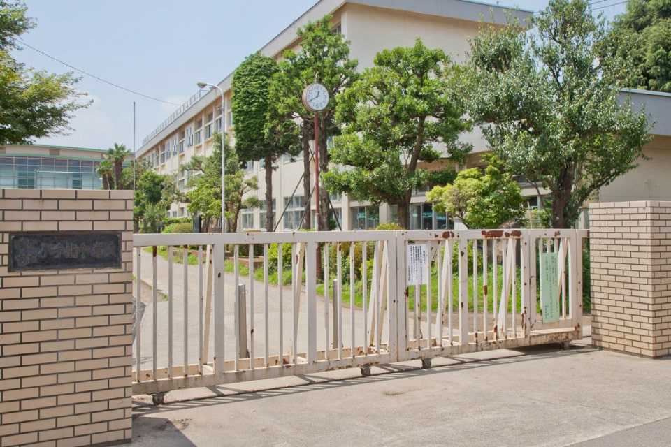
小手指中学校／徒歩27～28分
-
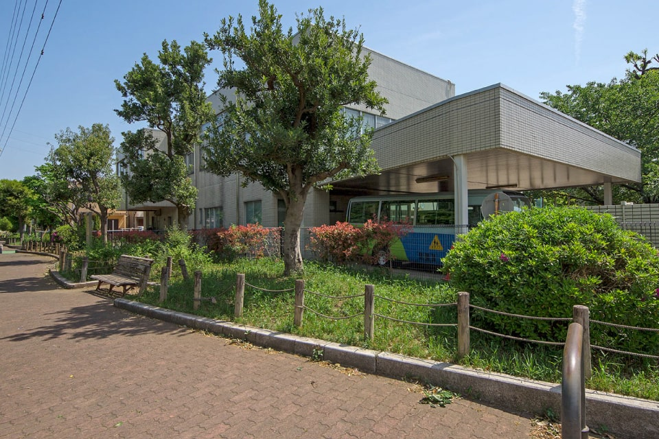
所沢若草幼稚園／徒歩6～7分
-
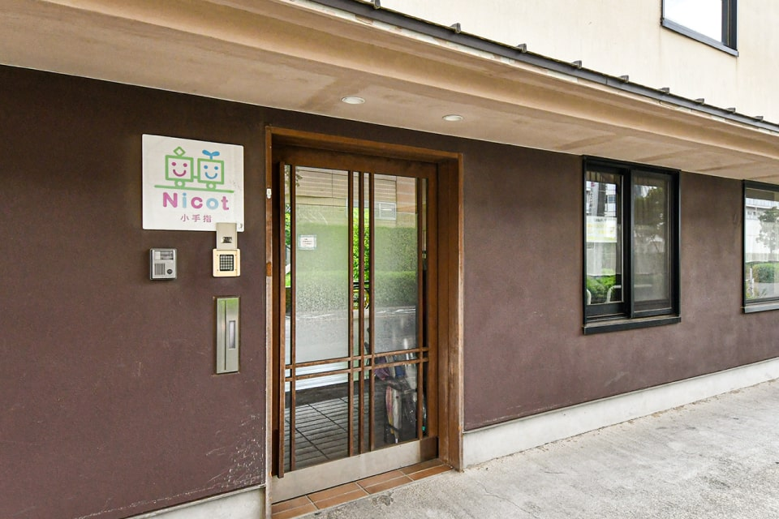
Nicot小手指／徒歩7～8分
-
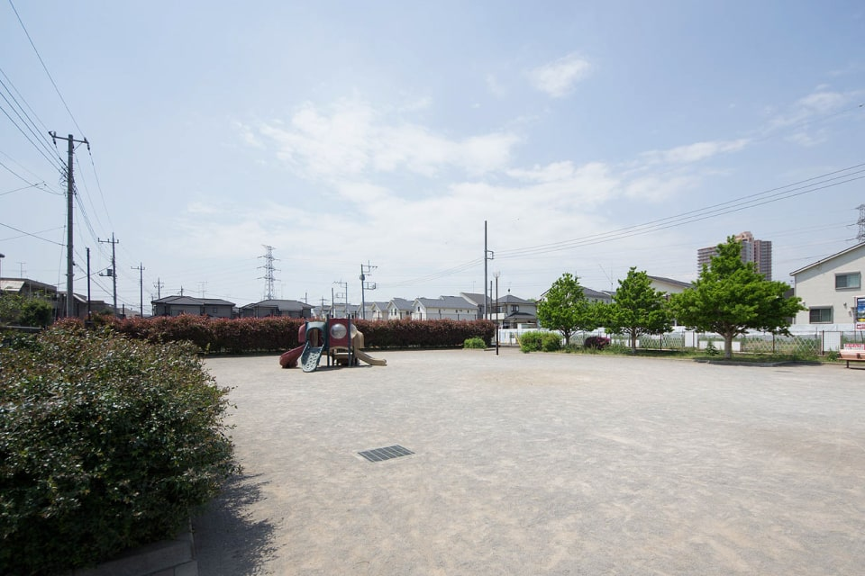
西窪公園／徒歩1～2分
-
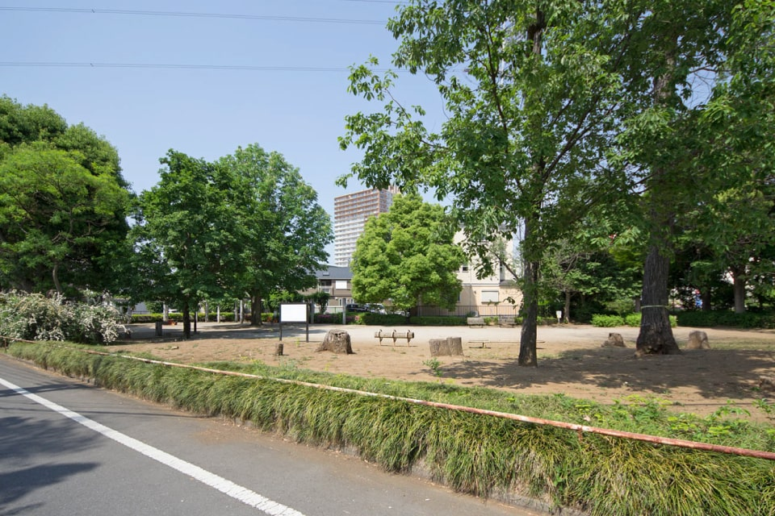
小手指東公園／徒歩4～5分
-
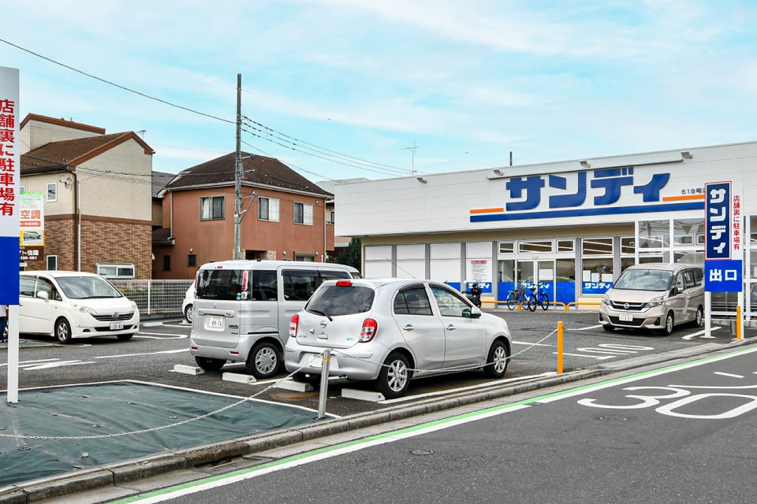
サンディ／徒歩1～2分
-
西友／徒歩7～8分
-
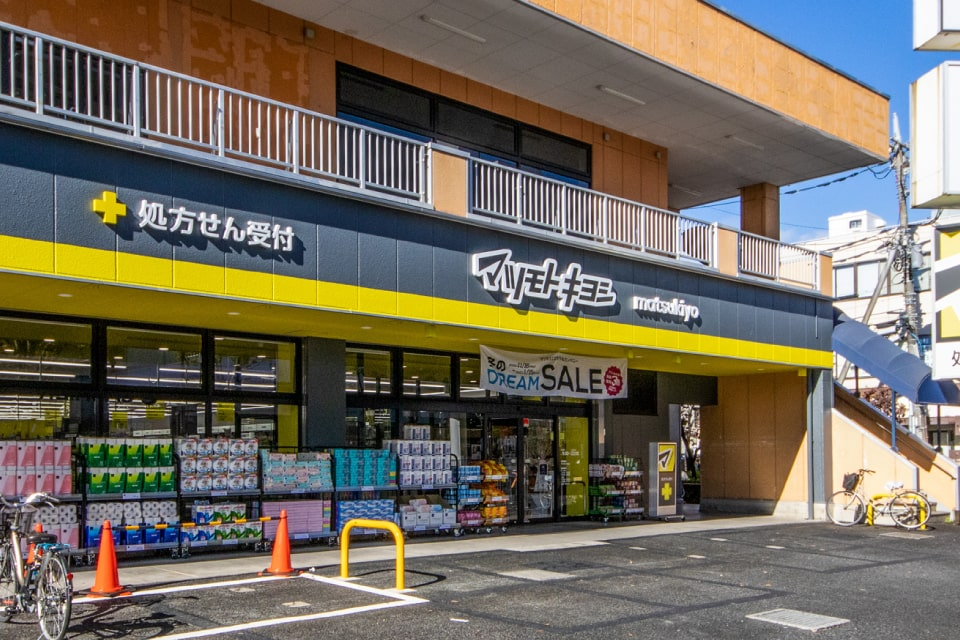
マツモトキヨシ／徒歩9分
-
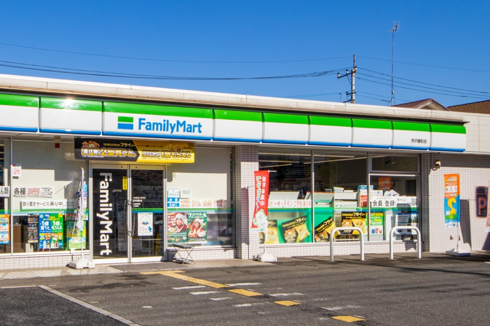
ファミリーマート／徒歩3～4分
-
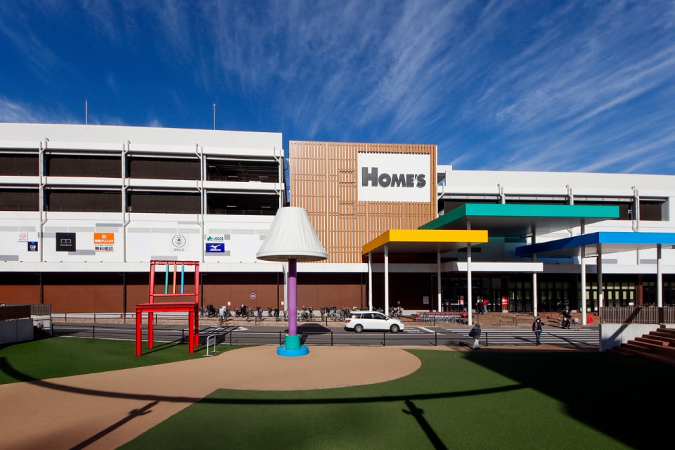
島忠ホームズ／徒歩10分
-
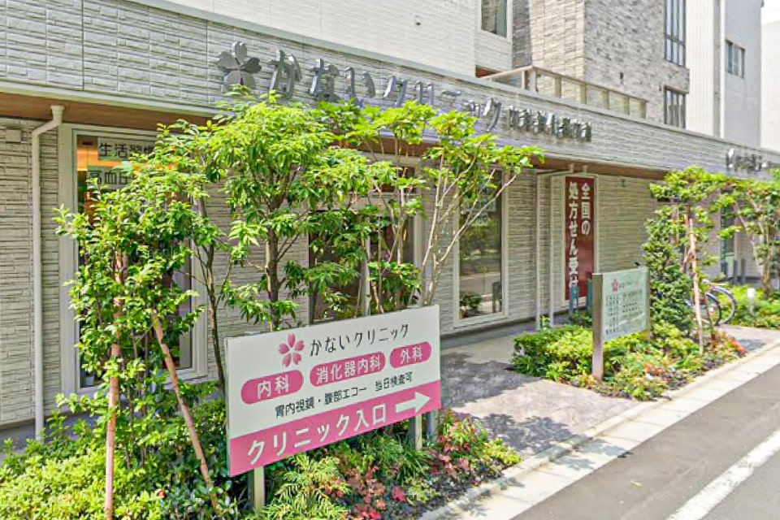
かないクリニック／徒歩5～6分
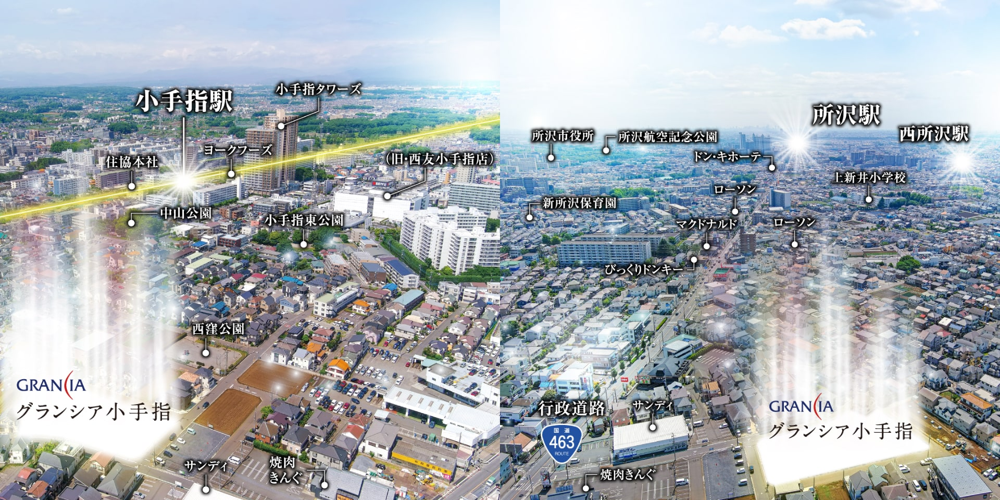
現地周辺空撮MAP（左：小手指駅方面／右：所沢駅方面）
駅近を享受する利便性の高い住環境
小手指駅最短徒歩9分という電車での円滑なアクセス性はもちろんのこと、お車での移動でも快適さを享受する「グランシア小手指」。所沢の大動脈である国道463号線【行政道路】も近く、最遠区画からでも約180Mと、各方面へスムーズにお出かけが可能です。駅周辺やロードサイドに商業施設も多数揃う、まさに“所沢を住みこなす”ブランニュー・プレイスが好評分譲中。
※イメージ
西武池袋線「小手指」駅 /
- 徒歩9～10分・自転車で約3～4分
西武池袋線「小手指」駅 /徒歩9～10分・自転車で約3～4分
｢池袋｣駅へダイレクトアクセス、都心の主要拠点へスマートにつながる歓びを実感する住環境。通勤通学での利便は勿論、多くの都市へ繋がる「小手指」駅まで最短で徒歩9分の駅近好立地です。
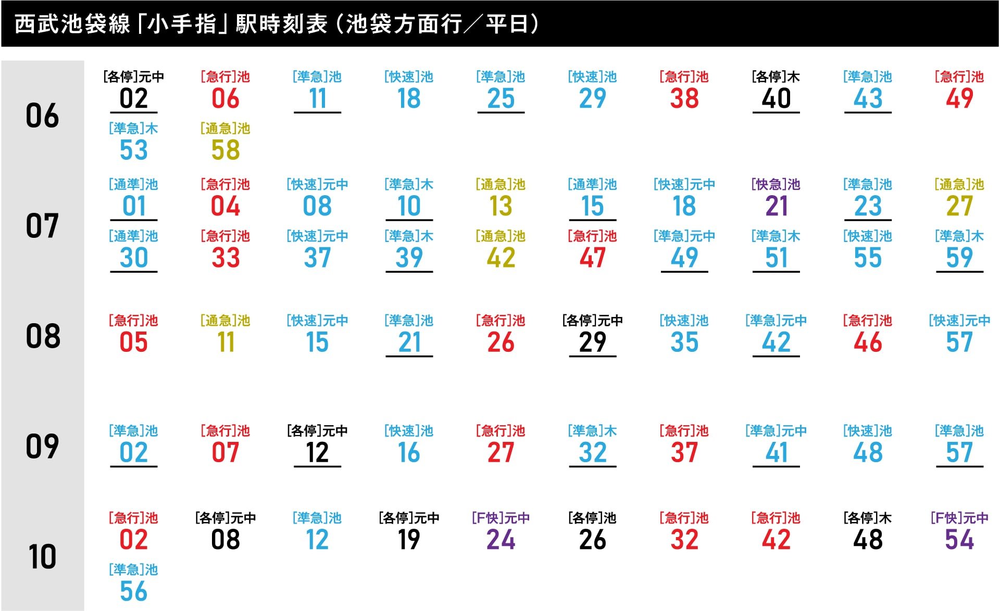
●種別：＿当駅始発 F快＝Fライナー 快急＝快速急行 急行 通急＝通勤急行 快速 通準＝通勤準行 各停
●行先：池＝池袋／木＝新木場／元中＝元町・中華街
※2024年3月現在のダイヤでの時刻表です。最新情報は西武鉄道の公式サイトをご覧ください。
-
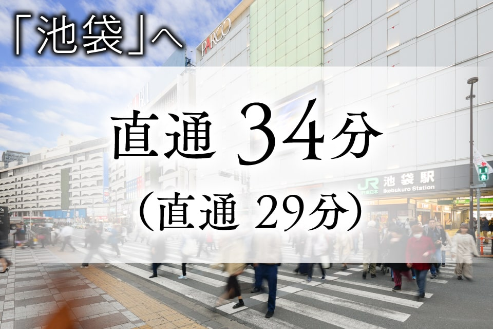
-
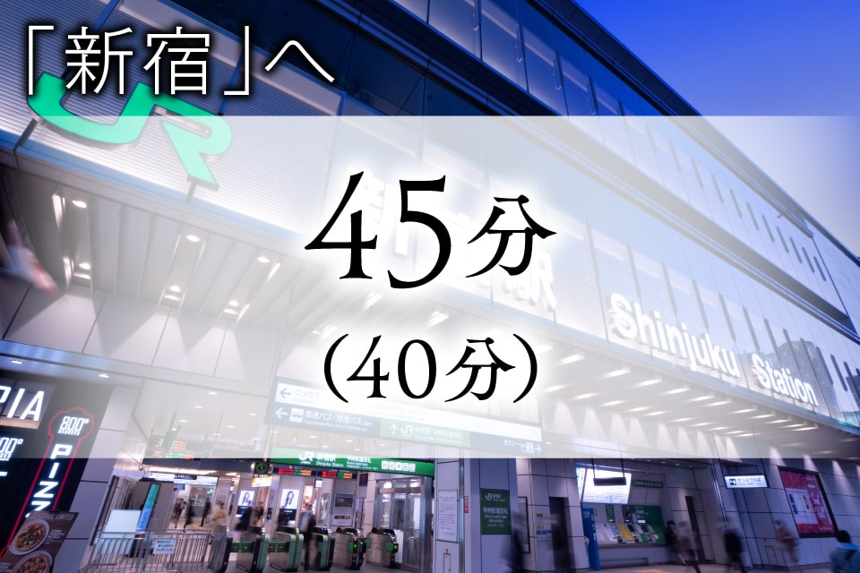
-
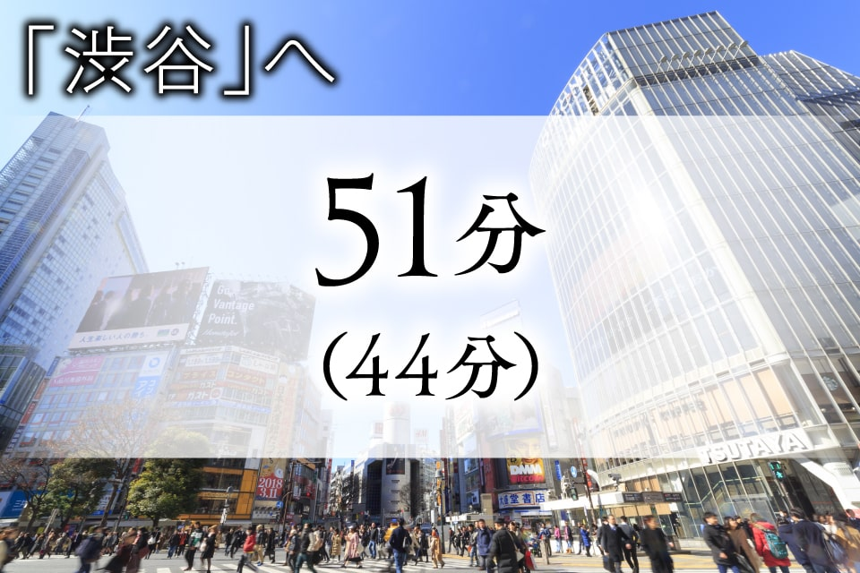
-
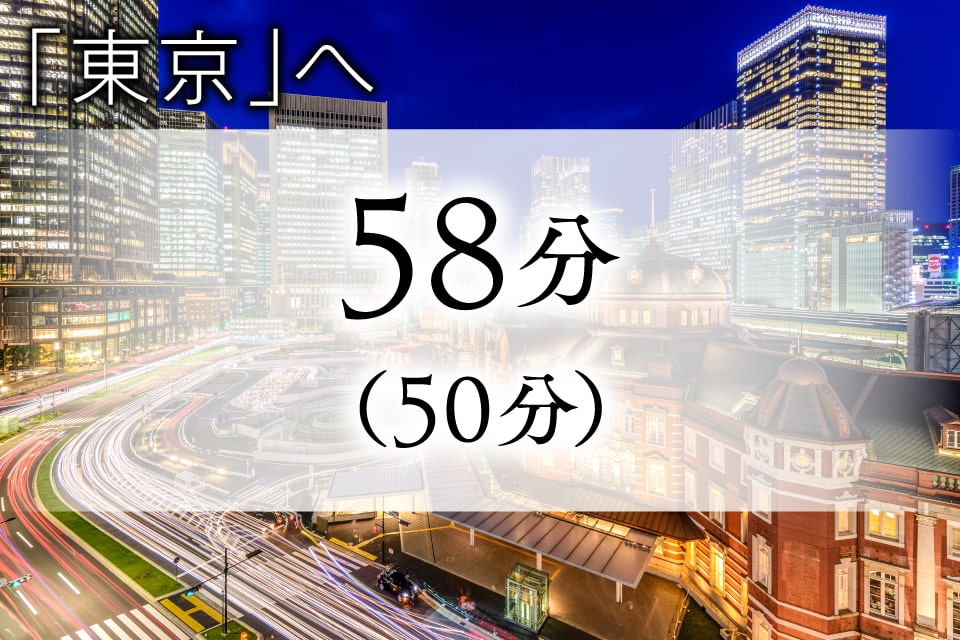
※西武池袋線「小手指｣駅より ■池袋駅へは西武池袋線通勤急行利用［直通］（日中平常時：西武池袋線急行利用）■新宿駅へは西武池袋線快速急行利用、池袋駅よりJR埼京線利用（日中平常時：西武池袋線急行利用、池袋駅よりJR埼京線利用）■渋谷駅へは西武池袋線通勤急行利用、池袋駅よりJR埼京線利用（日中平常時：西武池袋線快速急行利用、小竹向原駅より東京メトロ副都心線乗り入れ）■東京駅へは西武池袋線急行利用、池袋駅より東京メトロ丸の内線利用（日中平常時：西武池袋線快速急行利用、小竹向原駅より東京メトロ副都心線乗り入れ、池袋駅にて東京メトロ丸ノ内線乗換）※掲載の電車所要時間は、乗換え時間等を含んだ通勤時のもので時間帯により異なります。括弧表記の時間は日中平常時のものです。（日中平常時9:31～16:30着、通勤時7:00～9:30着）※2024年3月ジョルダン・駅すぱあと調べ